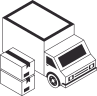
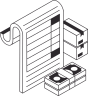

Place order
Merchant requests products and/or raw materials from supplier
Envisioning a purchase order experience that reduces friction, improves inventory management workflows, and provides powerful business insights.
Shopify's current purchase order experience is quite basic in relation to competitors like Procurify. We conducted merchant interviews and leveraged those insights to envision an ideal-state experience that would reduce friction, provide insightful data points to enhance our merchants' business intelligence.
Merchant requests products and/or raw materials from supplier
Supplier confirms the order and shares terms

Carrier ships the order toward the merchant
Merchant receives shipment and updates inventory

Match invoice, close out the order, and pay supplier
I want to create a purchase order quickly and accurately
so I can avoid stockouts and sell continuously
I want to align on payment terms up front
so I can manage cash flow with confidence
I want visibility into shipments in transit
so I can plan receiving and set merchant expectations
I want to receive and reconcile inventory accurately
so my on-hand counts stay trustworthy
I want to close orders with matching invoices
so my books and my inventory agree
Although there was a high-level product roadmap in place, I conducted UXR (~25 user interviews) to better understand merchant needs across a wide range of inventory complexities and industries. No matter what they sold — from party supplies to construction materials — merchants expressed the same frustrations and needs. The themes identified from this study led to stronger design solutions and concepts because they allow merchants to manage their bottom line effectively.
Current data limitations force merchants to be reactive instead of proactive, which can cause issues like stock-outs and brand reputation damage. We should make robust data insights accessible so merchants can effectively anticipate demand and restock in a timely manner.
Merchants jump between Shopify, spreadsheets, and email just to send a single PO. Consolidating these actions inside one surface cuts repetitive steps, data re-entry, and the errors that come with them.
Payment status, balance due, and cash-flow context are scattered or missing entirely. Surfacing them in the PO experience helps both operations and finance teams manage obligations proactively.
A robust dashboard that provides an overview of inventory movements, and reports on purchasing patterns and cost.
Low-stock alerts that notify the merchant to re-stock or potentially trigger automatic PO creation.
In-platform email composer with attached PDF so merchants never leave the tab to send a PO.
Supplier response-time signal using historical communication patterns.
Payment status column at the index level so accounting can prioritize and act on balances.
Cost summary redesign that separates incurred costs from payments made.
Current state
Drawing from these research themes, I defined solutions for the purchase order experience that would empower merchants to effectively manage their inventory, and ultimately improve profitability.
Empower merchants with high-level metrics and insights so they can optimize their daily workflows and tasks.
High-level metrics cards
Provide a daily or weekly snapshot of their inventory and sales.
Inventory status column
Display robust metrics on all inventory items so merchants can plan their orders more effectively.
AI-powered recommendations
AI assistant that calculates and recommends re-order quantities based on industry-standard formulas.
01
Make "Email supplier" a primary CTA because that will always be the merchant's next step. The "Save" button lets them return to a draft later.
02
Generate a PDF of the purchase order that is attached to the email and enable a preview mode.
03
Confirm the email was sent successfully — assuming we have the supplier's historical purchase data, we can surface an average response time.
Adapt the experience to capture unique payment programs and methods accepted by international suppliers.
High-level metrics cards
Enable smarter cash management with metrics cards that provide a daily snapshot of purchase order cash flows.
Payment status column
Introduce a payment status column so the accounting department can prioritize and manage payments.
Balance due
Display what is owed at the index level so merchants can manage multiple orders at a time.
Revamp summary module
Assuming payment-processing functionality was available, I would have continued exploring layouts for this module, with the following goals: • Ensure the layout is intuitive and clear to all persona types (purchasing, finance, etc.) • Establish a visual distinction between incurred costs versus payments made
Information density
Continue exploring and testing layout densities to optimize for clarity.
In the GSD prototype phase I would have conducted technical investigations with engineering to define API workflows and to iterate on potential email integration or AI-based OCR solutions.
Throughout the PO lifecycle, email is used to send the request, confirm the order, receive shipping/tracking information, and to manage invoice reconciliation. Products like Ramp currently leverage AI-based OCR tools to review and gather data from attachments like invoices and receipts. I believe a similar solution could reduce manual data entry and management for purchase orders. → Scrape and import purchase orders, shipment notices, invoices
Assuming the project was funded, next steps would have been to prototype the solutions into refined flows to share with product, engineering, and key stakeholders. Feedback from these collaborative sessions would be used to define technical constraints, project milestones, and a roadmap for build.
Product & Design
Dylan Tittel Jane Tran
Design System
Polaris
Engineering
George Ferreira